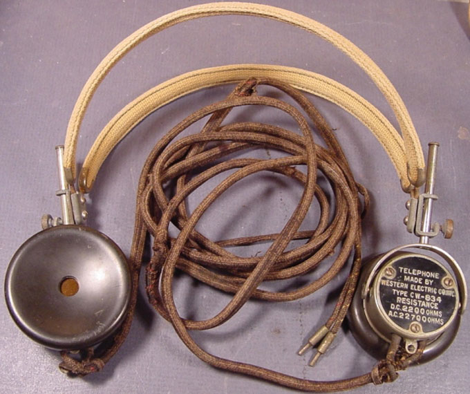

Изобрёл самые первые в истории наушники Натаниэль Болдуин, причём дома на кухне. Собрал он их из разных частей телефона, а изобретение это датируется 1910 годом. В начале своей «карьеры» наушники применялись только в военной деятельности: у радистов, у подводников и др. В массы наушники пошли лишь спустя два десятка лет после изобретения. Они моментально завоевали необыкновенную популярность среди обычных людей, а с появлением портативных плееров их важность стало трудно переоценить. Ещё бы, ведь появилась возможность получать удовольствие от любимой музыки в любом месте: в транспорте, на улице, в кафе и т.д. – абсолютно не мешая другим людям.Сейчас трудно найти сферу человеческой деятельности, где не нашлось бы применения наушникам. Наиболее важная роль отводится им в процессе звукозаписи.
